Data Science for Electron Microscopy
Week 7: Beating small & expensive data
FAU Erlangen-Nürnberg
Institute of Micro- and Nanostructure Research


Recap: Week 6 and today’s question
- Week 6: CNNs for microscopy — convolution as a sliding detector, weight sharing, feature hierarchy, U-Net for pixel-accurate segmentation.
- Core insight: a pretrained CNN is a hierarchical feature extractor — Layer 1 detects edges, deeper layers detect grain boundaries, phases, defects.
- The uncomfortable reality: to train a reliable CNN you typically need hundreds of labelled images. One labelled SEM micrograph of an additive-manufactured alloy can take hours of sample preparation plus another hour of expert annotation — one labelled image.
- Today’s question: you have 30 labelled TEM frames. How do you train a model that actually generalises?
- Answer: three complementary strategies — data augmentation, transfer learning, and synthetic data — combined into one workflow.
Road map and self-study
- Road map: recap Week 6 + today’s question (2) · the small/expensive-data reality in materials (5) · data augmentation: core idea; physical invariances; geometric; intensity; invalid augmentations; on-the-fly; laser-weld scenario; Albumentations code (8) · transfer learning: why features transfer; ImageNet→EM; domain gap; backbone and head; decision matrix; recipe freeze→head→fine-tune; catastrophic forgetting; gradual unfreezing (7) · synthetic data and digital twins: free labels; Voronoi pipeline; why it transfers (3) · the sim-to-real gap; domain adaptation; Voronoi limits; failure scenario (4) · active learning (2) · cross-material transfer (1) · putting it together: complete workflow; published evidence; validation; checklist; quantitative summary; Voronoi→SEM pipeline (6) · forward link to Week 8 (1).
- Self-study:
notebooks/week07_transfer_finetune.ipynb— pretrain a tiny CNN on abundant synthetic “task A” (Voronoi-like), then compare (i) from-scratch on few task-B labels vs (ii) transfer (freeze backbone, train head); plot loss and accuracy curves; vary label count and observe the transfer gap shrink. All CPU-fast on tiny data. Slide numbers in this deck match the notebook section headers.
The labelled-data gap: a three-order-of-magnitude problem
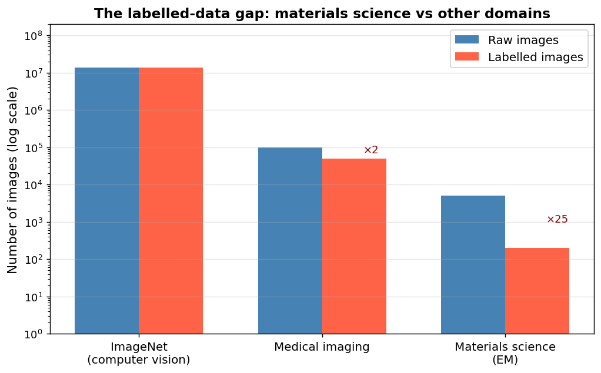
Labelled image counts across domains. ImageNet: 14 million images, crowdsourced labels in seconds. Medical imaging: tens of thousands, expert radiologists. Materials science / EM: 50–500 images, PhD microscopists spending hours per image Holm, Elizabeth A. et al., (2020); Sandfeld, Stefan et al., (2024). Three orders of magnitude separate us from where standard deep learning was designed to work.
Why labels cost so much in EM
- High acquisition cost: synchrotron beamtime, aberration-corrected TEMs costing €3–8 M — access is rationed.
- Expert annotation time: segmenting 100 grains in an SEM image takes hours; identifying defect types in an HAADF image requires crystallography expertise and literature comparison.
- Reproducibility barriers: a Zeiss and a FEI SEM of the same specimen produce systematically different contrast — pooling raw images from two instruments silently introduces a domain shift that corrupts a naive model.
- Limited specimen availability: a cross-section of a real additively-manufactured turbine component may be unique — you cannot re-image or re-annotate.
- The rule of thumb: in materials EM, expect 50–500 labelled images for a typical task. ResNet-50 has 25 million parameters — at 500 images that is 50 000 parameters per image. Guaranteed overfitting without outside help.
Overfitting in the small-data regime: the mechanism
- Overfitting = the model memorises the training set rather than learning generalisable patterns.
- With 50 labelled images, a ResNet-50 (25 M parameters) has ~500 000 parameters per training image. There are enough degrees of freedom to perfectly fit any labelling of those 50 images — including the noise.
- Typical EM overfitting shortcuts (what the model actually memorises):
- Detector vignetting: images acquired with the same gain settings at the same session are brighter at the centre. The model learns “bright centre → class A” rather than “class A microstructure.”
- Scale bar position or font: if images from one class systematically had the scale bar in one corner, the model learns the corner, not the microstructure.
- Microscope/operator session: instrument-specific contrast baseline, beam-damage patterns, contamination level.
- The diagnostic: run Grad-CAM (gradient-weighted class activation map). If saliency lights up on the image corner, the scale bar, or the vignette — not on the microstructure — you have a shortcut model.
Small data → fast overfitting
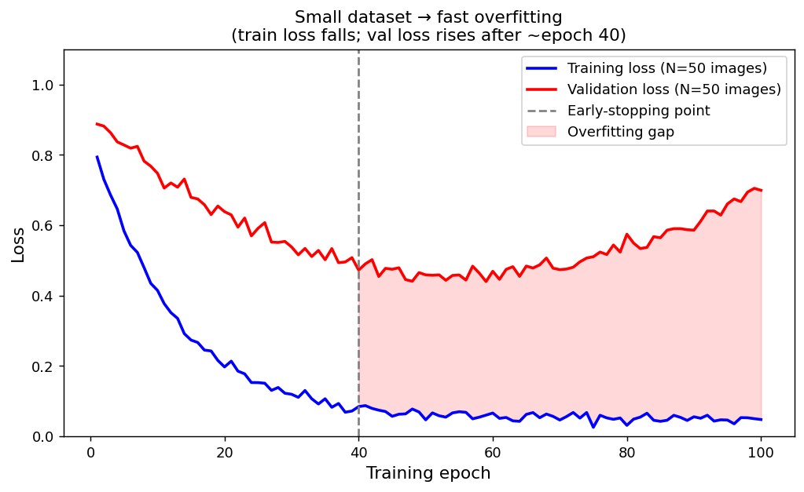
Training and validation loss for a CNN fine-tuned from scratch on 50 EM images. Training loss falls monotonically; validation loss starts rising around epoch 40 — the model is memorising the training images, not learning to generalise. The gap is the overfitting region.
The small-data survival kit: three strategies
- Strategy 1 — Data augmentation: apply physically plausible image transformations to multiply the effective training set size. Forces the network to learn invariant features, not per-image artefacts.
- Strategy 2 — Transfer learning: start from a CNN pre-trained on ImageNet (1.4 million images). The first layers’ edge and texture detectors transfer to EM images — we only need to adapt the last layers.
- Strategy 3 — Synthetic data: generate Voronoi microstructures (or physics simulations) and get perfect ground-truth labels at zero annotation cost. Pre-train on thousands of synthetic images; fine-tune on the 30 real ones.
- Critical rule: these three strategies are not alternatives — they are orthogonal levers used together. The production answer is: synthetic pre-training → augmentation throughout → ImageNet or synthetic backbone → fine-tune on real labelled data.
Augmentation: the core idea
- What augmentation does: take one labelled image and apply a transformation → produce a new image that looks different but represents the same physical content with the same label.
- What this achieves: the network must produce the same prediction for the original and the transformed versions. Any features that change under the transformation become uninformative. The model is forced toward invariant (physics-faithful) features.
- Concrete example: applying a horizontal flip forces the boundary detector to fire regardless of which side of the image the boundary is on — encoding the physical fact that grain boundaries look the same everywhere.
- On-the-fly is preferred: sample a fresh random transform every epoch. 50 images × 8 random transforms per epoch × 100 epochs → the network sees ~40 000 distinct views. Offline augmentation (pre-generate on disk) produces a fixed set the network will eventually memorise.
Augmentation: encoding physical invariances
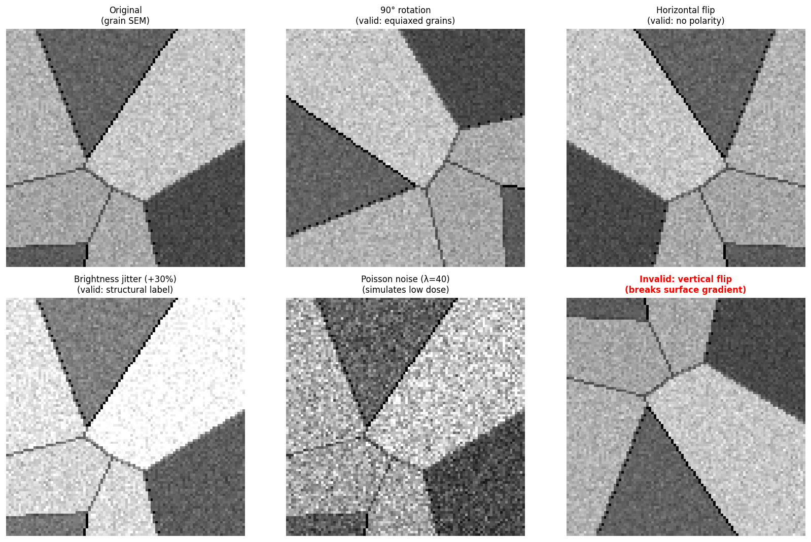
Six augmented views of the SAME synthetic grain microstructure. All six panels show the same Voronoi grain layout (same polygonal grains, same topology) transformed in different ways. Top row: original, 90° rotation (valid for equiaxed grains), horizontal flip (valid — no polarity). Bottom row: brightness jitter (valid — structural label), Poisson noise (simulates low dose), vertical flip (invalid — breaks a surface gradient if present). Each valid transform is a claim that the physics has a symmetry.
Geometric augmentations: what they encode
- Horizontal / vertical flip: encodes mirror symmetry. Valid for most equiaxed microstructures; invalid if the feature has polarity (e.g. surface-hardening layer — “top” differs from “bottom”).
- Rotation (90°, 180°, 270°, or arbitrary): encodes rotational symmetry. Valid for equiaxed grains; invalid for directionally solidified columnar structures or any feature where orientation is the label.
- Random crop / zoom: encodes translation and scale invariance. Usually safe, but ensure the crop does not eliminate the feature you are trying to detect.
- Elastic deformation: simulates sample warping or electron-beam drift. Valid for topology-based tasks (grain boundary present/absent); invalid if metric properties (grain size, aspect ratio) are the label — elastic warp silently corrupts quantitative ground-truth.
- Label consistency rule: every geometric transform applied to the image MUST be applied identically to the mask, bounding box, or label. Rotate image AND mask by the same randomly-sampled angle, at the same time.
Intensity augmentations and noise
- Brightness / contrast jitter (±10–20%): makes the model robust to session-to-session detector variation and illumination drift. Valid when the label is structural (grain present/absent, defect class). Invalid when the label is calibrated to absolute intensity (EELS chemical quantification, BSE Z-contrast phase fractions).
- Gamma correction: simulates non-linear detector response. Usually valid for structural tasks.
- Gaussian noise: simulates electronic readout noise — signal-independent variance. Valid; does not corrupt structural labels.
- Poisson (shot) noise: the physically correct noise model for EM — signal-dependent, dominant at low dose. Augmenting with Poisson noise simulates low-dose imaging and is the best insurance against cross-session contrast variation in beam-sensitive experiments.
- Blur (Gaussian or motion): simulates defocus or sample drift. Forces the model to rely on topology, not fine texture — exactly the property that makes synthetic grain-boundary detectors transfer to real SEMs.
Physically-invalid augmentations: the materials gate
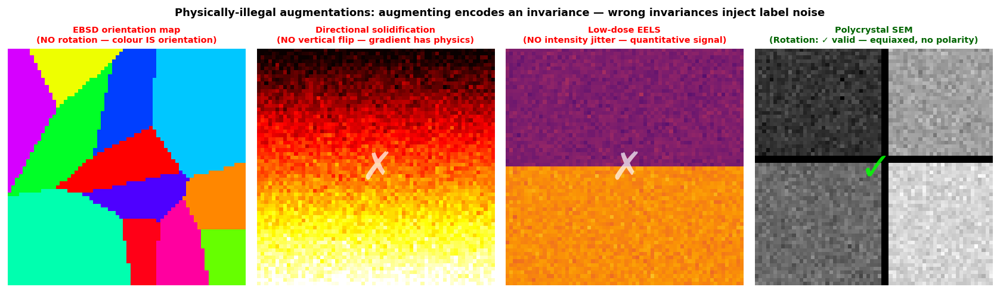
Four panels illustrating when augmentations are illegal. Panel 1 (EBSD map): rotation is illegal — the colour encodes crystallographic orientation; rotating the image without rotating the IPF colour key produces a physically impossible map. Panel 2 (directional solidification): vertical flip is illegal — the thermal gradient is physically real. Panel 3 (EELS map): intensity jitter is illegal — calibrated intensity encodes composition. Panel 4 (equiaxed polycrystal): all augmentations checked here are valid.
On-the-fly augmentation and label consistency
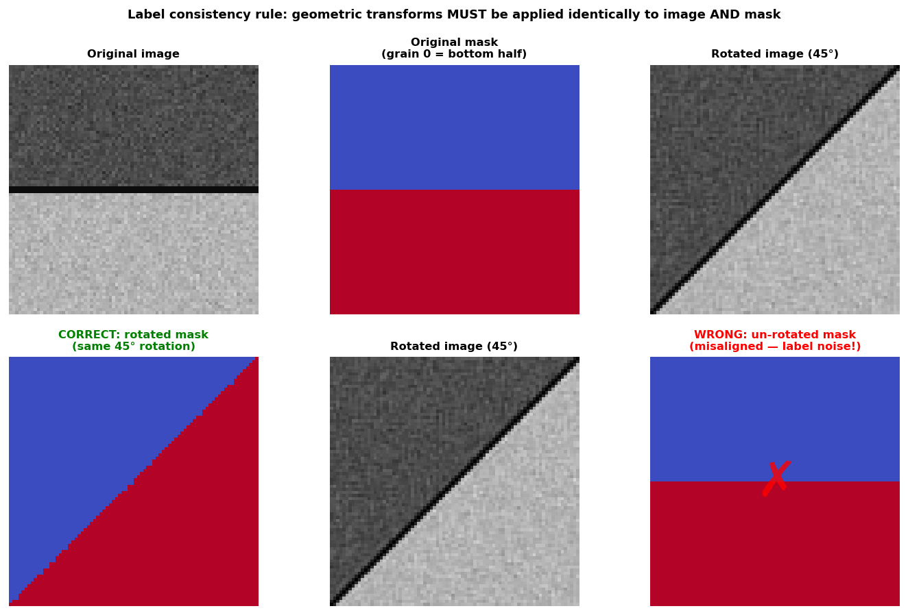
Label consistency: when a grain-boundary image is rotated 45°, the segmentation mask must be rotated by exactly the same 45°. Top row (left to right): original image, original mask, rotated image (45°). Bottom row: correct — rotated mask (same 45°, joint transform); wrong — un-rotated mask paired with the rotated image, producing misaligned ground truth.
- On-the-fly (preferred): sample a new random transform per batch — the network never sees exactly the same pixels twice. Near-infinite effective dataset from 50 images.
- Offline augmentation: pre-generate augmented images on disk. Faster per epoch but with a fixed set that the network will eventually memorise over many epochs. Use only when augmentation is computationally expensive (e.g. physics rendering).
- The rule: augment AFTER splitting by specimen. Augment only the training set. Never augment before the train/test split — an image and its rotation must not land on both sides of the split.
Augmentation scenario: a laser-welded joint
- Scenario: 50 SEM images of a laser-welded joint. The weld bead runs left-to-right. Task: classify weld quality (good/defective).
- Apply the physics gate to each proposed augmentation:
- Horizontal flip: Valid — the weld is approximately mirror-symmetric about its centreline; a left-right flip produces a physically plausible weld of the same quality class.
- Vertical flip: Invalid — top surface (cap bead, possible undercut) ≠ root (penetration, possible lack-of-fusion). A vertical flip produces a weld that cannot physically exist.
- 90° rotation: Invalid — the weld runs left-to-right; rotating 90° makes it vertical. Bead direction is physically defined (travel direction, gravity during solidification).
- Brightness jitter: Valid — quality is a structural judgement, not an absolute-intensity measurement; intensity perturbations add robustness to session/detector variation.
- Gaussian noise: Valid — same reason as brightness jitter.
- The meta-point: every verdict came from physics, not from a CV default.
Augmentation pipeline: Albumentations code
- The key API pattern: apply one sampled transform to image AND mask simultaneously — guarantees label consistency for segmentation tasks.
transform(image=img, mask=mask)samples one random configuration and applies it to both. The mask and image stay aligned.- The classic bug: calling
transform(image=img)andtransform(image=mask)separately — two independent random angles — mask and image become desynchronised. Symptom: IoU plateaus with no obvious cause. - Each line is a physics claim:
HorizontalFlipclaims mirror symmetry;ElasticTransformclaims drift robustness;RandomBrightnessContrastclaims the label is structural, not intensity-calibrated.
Why ImageNet features transfer to EM images
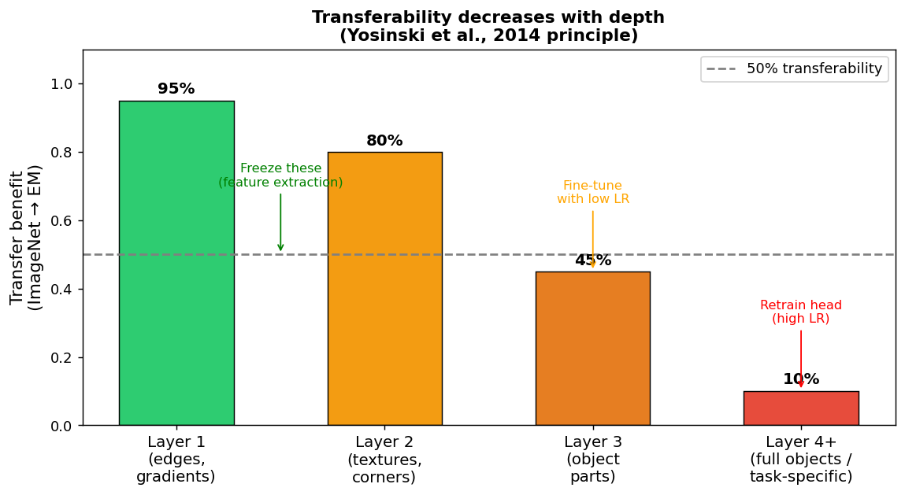
Transferability as a function of CNN depth Yosinski, Jason et al., (2014). Layer 1 (edges, gradients): ~95% transferable — universal low-level image features. Layer 2 (textures, corners): ~80% — mostly domain-general. Layer 3 (object parts): ~45% — becoming domain-specific. Layer 4+ (full objects / task-specific): ~10% — ImageNet-dog features are not EM features.
The domain gap: ImageNet vs EM images
- Natural images (ImageNet): 3-channel 8-bit RGB, perspective projection, organic textures (fur, grass, wood), JPEG noise.
- EM images: 1-channel 16-bit grayscale, orthographic top-down projection, crystallographic periodic textures, Poisson shot noise.
- Consequences: (1) Input format mismatch — grayscale to RGB: replicate the channel × 3 (standard fix). Do NOT remove the first conv layer to accept 1 channel — that discards the most transferable layer in the network. (2) Texture mismatch — ImageNet has no Moiré fringes, lattice periodicity, or diffraction banding. Self-supervised pretraining on your own micrographs (Week 8) closes this gap more tightly.
- Rule of thumb: small domain gap (natural photos vs optical micrographs) → feature extraction alone is usually enough. Large domain gap (natural photos vs atomic-resolution HAADF or diffraction patterns) → fine-tuning is needed to adapt the backbone.
The backbone and the head
- Backbone (the pretrained feature extractor): maps image → high-dimensional feature vector (e.g. ResNet-50’s He, Kaiming et al., (2016) 2048-D penultimate representation). Contains the transferable, general-purpose visual knowledge.
- Head (the task-specific output layer): maps feature vector → your answer (e.g. “grain” or “boundary” probabilities, or a scalar grain size). Randomly initialised for your task — the pretrained 1000-class ImageNet head is discarded.
- Replacing the head is non-negotiable: the pretrained head outputs 1000 ImageNet class logits. Your task has 2 phases (or 3, or a scalar). Dimensions mismatch and semantics are wrong — replace entirely.
- Feature extraction: freeze the entire backbone (no gradient updates), train only the new head. Safe, fast, correct when labels are very scarce (<100).
- Fine-tuning: allow backbone weights to update, but with a much smaller learning rate than the head.
Feature extraction vs fine-tuning: the decision matrix
| Small label count (<100) | Medium label count (100–1 000) | |
|---|---|---|
| Small domain gap (optical vs optical) | Feature extraction | Fine-tuning (differential LRs) |
| Large domain gap (ImageNet vs HAADF) | Feature extraction + BN adapt | Fine-tuning (differential LRs + gradual unfreeze) |
| Zero real labels | Synthetic pretrain → head | Synthetic pretrain → fine-tune |
- Feature extraction (freeze backbone, train head): minimises overfitting risk; fast; may underfit if the domain gap is large and features are not well-matched.
- Fine-tuning (unfreeze backbone, differential LRs): adapts features to the new domain; more powerful with enough data; risks catastrophic forgetting at small N.
- Batch normalisation trap: a frozen backbone in
eval()mode uses ImageNet’s stored BN statistics. Grayscale 16-bit micrographs have different statistics → silent mis-normalisation → weak features. Fix: keep BN layers intrain()mode even when backbone weights are frozen.
The transfer learning recipe: freeze → head → fine-tune
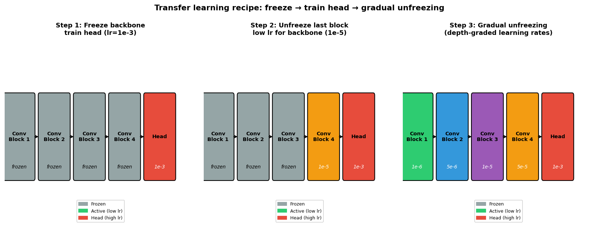
Three-stage transfer learning recipe. Stage 1: all backbone blocks frozen (grey); only the head (red) is trained at lr=1e-3. Stage 2: last backbone block unfrozen (orange) with low lr=1e-5; head continues at 1e-3. Stage 3: gradual unfreezing, depth-graded learning rates — early layers receive the smallest lr, late layers more, head the most.
Catastrophic forgetting and differential learning rates
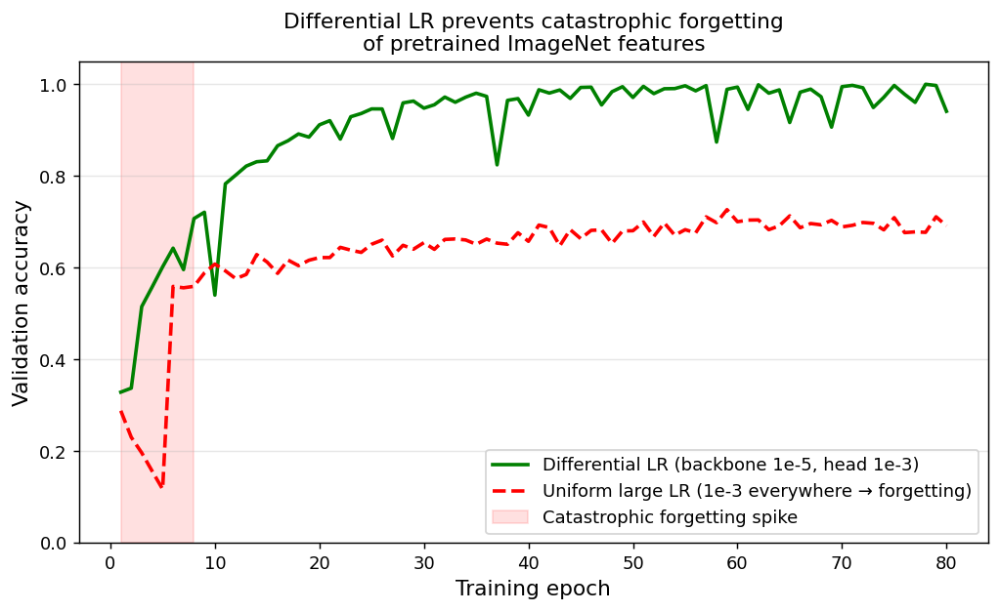
Validation accuracy during fine-tuning. Green (correct): differential LRs — backbone gets lr=1e-5, head gets lr=1e-3; accuracy climbs steadily. Red dashed (wrong): uniform large lr=1e-3 for the whole network — the first few epochs destroy pretrained ImageNet features (catastrophic forgetting spike); recovery is partial and slow.
- Catastrophic forgetting mechanism: the randomly-initialised head produces large, near-random gradients in epoch 1. Backpropagated at the normal (large) lr through the pretrained backbone, these random gradients overwrite the carefully learned ImageNet features before the head has stabilised.
- Differential learning rates: backbone lr ≈ \(10^{-5}\); head lr ≈ \(10^{-3}\) — a ratio of 100×.
- The ratio reflects the distance to the minimum: the backbone is already at a good minimum (small steps needed); the head is randomly initialised far from any minimum (large steps needed).
Gradual unfreezing prevents forgetting
- Protocol (four stages):
- Freeze all backbone layers. Train head at lr = \(10^{-3}\) until validation plateau.
- Unfreeze the last backbone block only. Train with backbone lr = \(10^{-5}\), head lr = \(10^{-3}\).
- Unfreeze the next-to-last block. Reduce backbone lr slightly further.
- Continue unfreezing from top to bottom (most domain-specific → most general).
- The reason for top-down order: deepest layers are most domain-specific (need most adaptation) — unfreeze them first. Earliest layers are most general (preserve them longest).
- Defence-in-depth: combine gradual unfreezing AND differential LRs. Do not choose between them. By keeping the backbone frozen until the head has converged, the backbone never sees random-gradient blasts.
Synthetic data: free perfect labels by construction
- The standard approach: acquire image → expert annotates label. Expensive, slow, limited.
- The synthetic flip: choose label (the ground-truth structure) → render the image from it. The label is perfect by construction — no annotator disagreement, no boundary ambiguity, no label noise.
- Materials advantage: we know the physics. Voronoi tessellations model grain topology. Phase-field simulations model microstructure evolution. Multislice simulations render realistic TEM images of known atomic structures Rakowski, Aaron et al., (2024).
- Quantitative example: generating 10 000 Voronoi grain images takes minutes. Manually labelling 10 000 real SEM grain images takes months of expert time.
- Caution: synthetic data fails on exactly the feature the generator omits. If Voronoi cannot make twins, a twin-detection model trained on it cannot learn twins — not a tuning problem but an epistemic one.
Voronoi synthetic microstructure pipeline
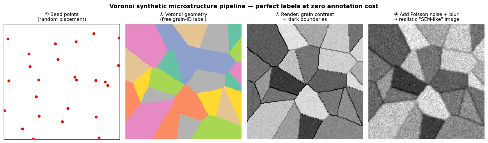
Voronoi synthetic microstructure pipeline for grain segmentation. From left: (1) random seed points placed in 2D; (2) each pixel assigned to its nearest seed — the Voronoi geometry gives perfect free grain-ID labels; (3) random intensity per grain + dark boundary strip renders a simple grain image; (4) Poisson noise + Gaussian blur makes it look like a low-magnification SEM acquisition.
Why synthetic grain training transfers to real SEM images
- Topological truth of grain networks: triple junctions have ~120° angles. Boundaries are continuous closed curves. Grains fill space without gaps. These properties hold in every polycrystalline material, alloy-independent.
- Voronoi captures exactly the topological truth — the connectivity of boundaries and junctions. It does not capture twins, non-convex shapes, or grain-interior texture. But for grain-boundary detection, topology is the task-relevant invariant.
- Result: a U-Net trained only on Voronoi images with no real SEM images in training correctly identifies grain boundaries on real polycrystalline SEM images — because the task reduces to “find the dark narrow strip between two bright regions,” and that description transfers across all imaging conditions.
- The generalisable rule: synthetic data works when the generator captures the task-relevant invariant. It fails when the task depends on a feature the generator omits.
- Application: grain-size measurement, triple-junction statistics, grain-shape quantification — all work. Annealing twin identification, specific texture components — do not work without real data or a physics-based generator.
The sim-to-real gap
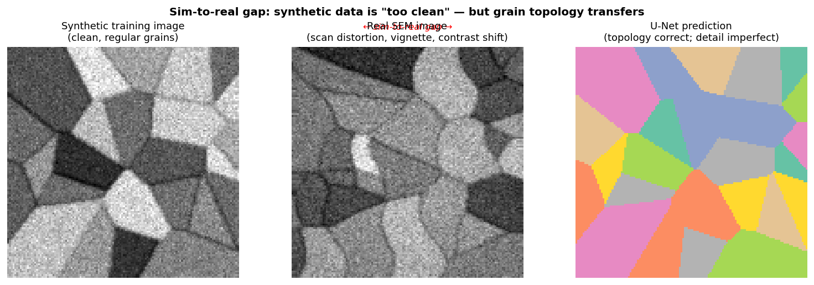
Three panels showing the sim-to-real challenge. Left: synthetic training image (clean, regular grains, no scan artefacts). Centre: real SEM image with scan distortion, vignette, and contrast drift relative to the synthetic distribution. Right: U-Net prediction — grain topology is correctly identified despite the gap, because topology is the task-relevant invariant.
Closing the sim-to-real gap: domain adaptation
- Realistic noise modelling (cheapest and most effective): measure the actual noise parameters of the target instrument (Poisson gain factor, Gaussian readout sigma). Use those in the rendering pipeline. Now synthetic images match real noise statistics.
- Style transfer / CycleGAN: learn the “texture skin” of real SEM images and paint it onto synthetic geometry while preserving the exact free mask. Powerful but adds training instability and requires real unlabelled images.
- Adversarial domain adaptation: train an encoder whose features are statistically indistinguishable between synthetic and real domains — a domain discriminator is trained adversarially. No real labels needed, but requires careful balancing.
- Fine-tuning on a few real labels: even 10–20 real labelled images, fine-tuned onto a synthetic-pretrained model, usually beats all the above. Always try the boring solution first.
- Augmentation bridges the gap for free: brightness jitter, Poisson noise, blur, elastic deformation in the rendering pipeline are all domain-adaptation moves — they expand the synthetic distribution toward the real one.
Voronoi limits: what the generator cannot produce
- What Voronoi gets right: space-filling topology; ~120° triple junctions; random grain-size distribution; boundary connectivity. These topological properties transfer to real grain boundary detection.
- What Voronoi cannot generate:
- Annealing twins: straight parallel boundaries at exactly 60° misorientation — a common feature in FCC metals (austenite, copper, aluminium). Voronoi never produces exactly straight, parallel boundaries.
- Non-convex grain shapes: heavily deformed microstructures with elongated, interlocking grain morphologies.
- Grain-interior sub-structure: deformation bands, low-angle boundaries, orientation gradients within one grain.
- Phase-specific contrast: in multi-phase alloys, different phases have systematically different contrast from different crystal structure, not just random intensity variation.
- The rule: the generator’s omissions become the model’s blind spots. Know your generator’s physics before deploying.
The sim-to-real gap: a failure scenario
- Scenario: you train a CNN on Voronoi synthetic images to detect grain triple junctions. It achieves 96% accuracy on held-out synthetic data. Deployed on real SEM, it drops to 61%.
- Differential diagnosis:
- Geometry gap: Voronoi gives only convex ~equiaxed grains; real sample has elongated grains after rolling → the junction geometry looks different.
- Missing artefacts: real SEM has charging streaks, contamination spots that look like triple junctions.
- Contrast gap: per-grain contrast model is too uniform; real grains have sub-grain structure from channelling.
- Synthetic-style shortcut: model learned the Voronoi boundary-width regularities that are absent in real images.
- The fix is not “more synthetic data” — more of a distribution that omits real artefacts still omits them. The fix is: add realistic rendering + fine-tune on 10–20 real images.
Active learning: label the most informative samples
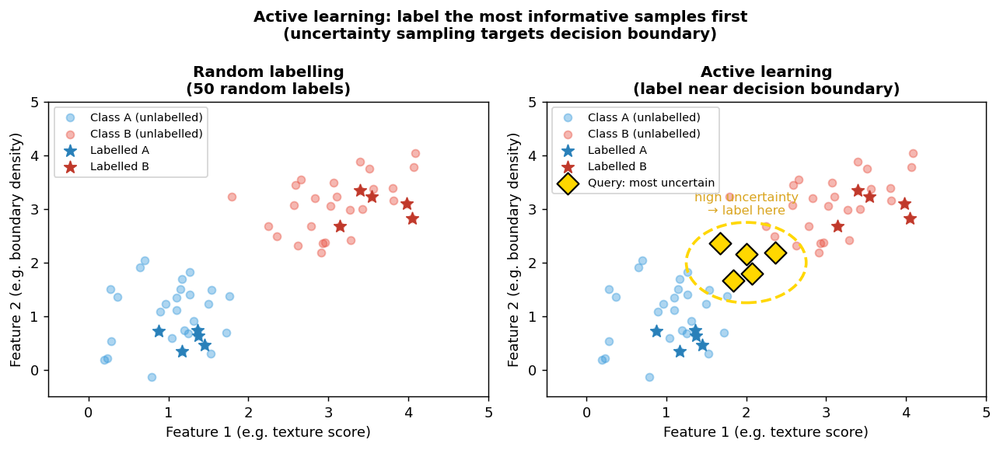
Left: random labelling strategy — 50 labels scattered uniformly across feature space. Right: active learning — labels concentrated near the decision boundary, where uncertainty is highest. With the same 50 labels, the active strategy correctly identifies the decision boundary; random labelling leaves a large uncertain region.
Active learning: the annotation loop
- Step 1 — Seed: label a small random batch (10–20 images) to get a starting model.
- Step 2 — Score: run the current model on all unlabelled images, compute an uncertainty score (e.g. entropy of class probabilities, or predictive variance).
- Step 3 — Query: select the \(k\) most uncertain images (or a mix of uncertain + diverse) for expert annotation.
- Step 4 — Retrain: add newly labelled images to the training set, retrain (or fine-tune), return to Step 2.
- Cold-start warning: with no initial labels the model’s uncertainty is meaningless (all predictions are near-chance). Always seed with a small random batch before activating uncertainty sampling.
- Batch diversity trap: pure uncertainty sampling in batches picks a tight cluster of near-identical hard cases. Combine uncertainty with diversity (spread queries across feature space).
Cross-material transfer: when the source is another alloy
- Strategy: pretrain on a large database of labelled images from one material system, then fine-tune on a small set from a different (but related) material.
- Example: a grain-boundary segmentation model trained on 1 000 labelled steel SEM images is fine-tuned on 30 labelled aluminium SEM images.
- Why this works: grain-boundary topology is alloy-independent — space-filling cellular networks with ~120° triple junctions appear in every polycrystalline metal. Contrast mechanisms differ (steel vs Al etch response), but the topological discriminant is the same.
- Advantage over ImageNet: same imaging modality (SEM), same spatial scale, same task — much smaller domain gap than ImageNet → EM. Expect less fine-tuning and fewer target labels to reach the same accuracy.
- Practical corollary: if a large labelled dataset exists for material A, it is worth fine-tuning for material B even if B seems very different. The shared topology is more powerful than the contrast difference is harmful.
The complete small-data EM workflow
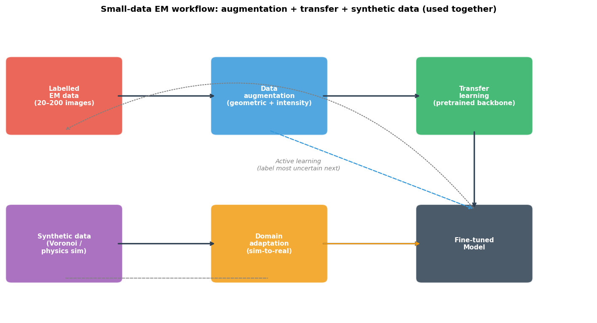
Complete small-data EM workflow diagram. The labelled EM data (20–200 images) feeds augmentation and transfer learning in parallel; synthetic data feeds domain adaptation; all three converge on a fine-tuned model. The active learning loop (dotted arrow, bottom) queries the fine-tuned model for the most uncertain unlabelled images, sends them to expert annotation, and grows the labelled pool.
Transfer learning in EM: published evidence
- ImageNet → Au nanoparticle TEM segmentation Rakowski, Aaron et al., (2024): a U-Net with an ImageNet-pretrained ResNet encoder was fine-tuned on a small set of labelled TEM frames of Au nanoparticles on amorphous carbon. The pretrained encoder correctly identified “structured lattice fringe region vs featureless speckle” because that is a generic edge/texture discrimination task — exactly what ImageNet Layer 1–2 features are good at.
- Voronoi → real SEM grain boundary detection Holm, Elizabeth A. et al., (2020); DeCost, Brian L. et al., (2017): a U-Net Ronneberger, Olaf et al., (2015) trained only on Voronoi synthetic images with no real SEM data in training correctly segments grain boundaries on real polycrystalline SEM images, because grain-boundary topology (dark thin strip between two regions) is the task-relevant invariant captured by Voronoi.
- Key lesson from both examples: what transfers is not “knowledge about the specific objects.” What transfers is the visual vocabulary — edge detectors, contrast-change detectors, texture detectors — which is universal across image domains and across synthetic-to-real transfer Goodfellow, Ian et al., (2016).
- The common pattern: both succeeded because the task reduced to a generic visual discrimination (structured vs unstructured; boundary vs interior) rather than a domain-specific one (specific crystal structure, specific defect type).
Validation in the small-data regime
- Group by specimen, not by crop: if crops from the same EM specimen appear in both train and test, the model memorises specimen identity (detector vignette, brightness baseline, session contrast) rather than the physical microstructure.
- The protocol:
GroupKFold(n_splits=5).split(X, y, groups=specimen_ids)— entire specimens are in either train or test, never both. This is the Week 4 lesson applied to the augmented EM context. - Augmentation leakage: if you augment before splitting, a rotated copy of a training image lands in the test set. The test accuracy measures memorisation recall, not generalisation. Rule: split first, then augment.
- Honest consequence: group-based splitting gives lower and noisier numbers — with 5 specimens your effective test set is 2 specimens. That lower honest number beats a higher leaked one every time. The variance is information (it tells you how little you actually know), not a problem to optimise away.
Practical checklist for small-data EM tasks
- Before augmenting: confirm each transform is physically valid for your specific material and task. If the label is calibrated to intensity, brightness jitter is illegal.
- Always GroupKFold by specimen (not by crop): split first, then augment. A rotated copy of a training specimen must not appear in the test set.
- Start with feature extraction (<100 labels): freeze backbone, train only head. If accuracy is too low, move to fine-tuning with differential LRs.
- Synthetic pre-training: if you have a physical model of your microstructure, generate 1 000–10 000 synthetic images first. Even simple Voronoi geometry pre-training helps if the task depends on topology.
- Fine-tune with differential LRs: backbone lr \(\approx 10^{-5}\), head lr \(\approx 10^{-3}\). Use gradual unfreezing (head → last block → deeper blocks).
- Active learning: if you can acquire unlabelled images cheaply, prioritise annotation budget on the most uncertain ones — uncertainty sampling or entropy scoring.
Quantitative summary: what each strategy delivers
| Strategy | Label budget | Typical gain | Key caveat |
|---|---|---|---|
| Augmentation alone | 50 images | $$1.5–3× effective data | Invalid transforms hurt |
| Feature extraction | 20–100 images | $$10–30% accuracy improvement | BN running stats trap |
| Full fine-tuning | 100–1000 images | $$20–50% over scratch | Catastrophic forgetting if no diff-LR |
| Voronoi pre-train | 0 real labels | Strong baseline for grain tasks | Fails for twins, non-equiaxed |
| All combined | 20–50 real labels | Close to full-data performance | Honest grouped validation required |
Putting it all together: the Voronoi → SEM grain segmentation pipeline
- Step 1 — Synthetic pre-training: generate 5 000 Voronoi grain images in minutes; train a U-Net on them. The encoder learns grain topology features for free.
- Step 2 — Augmentation: during pre-training, apply random intensity jitter, Poisson noise, elastic deformation, random crops. The encoder becomes robust to contrast and scale variation.
- Step 3 — Fine-tune on real SEM images: collect 30 expert-labelled real SEM grain images. Fine-tune: freeze encoder (feature extraction) → train decoder and skip connections at high LR → unfreeze encoder at low LR.
- Step 4 — Honest validation: split 30 images by specimen (not by crop). Report IoU and Dice on the held-out specimens, not accuracy.
- Result: a grain-segmentation U-Net that generalises across imaging sessions, magnifications, and grain sizes — using only 30 labelled real images and no ImageNet.
- Connect to Week 6: the U-Net architecture (encoder-decoder with skip connections) is unchanged from last week. What changed is how we train it.
Forward link: Week 8 — Unsupervised learning and autoencoders
- Today’s remaining gap: transfer learning from ImageNet imports features learned on natural photographs (dogs, cars, buildings). The domain gap to EM data (atomic-resolution HAADF, diffraction patterns, EELS maps) is real.
- Week 8’s answer: an autoencoder learns representations from your own unlabelled EM data — no ImageNet needed, no labels needed, no synthetic generator needed. It compresses each image into a compact latent vector and reconstructs it, learning the features that matter most for your data.
- Why this is powerful: a backbone pre-trained with an autoencoder on 10 000 unlabelled EM images will have features far better matched to your microscopy task than an ImageNet backbone — and requires zero annotation.
- Autoencoders also enable: anomaly detection (reconstruction error flags unusual images), dimensionality reduction for exploring large datasets, and latent-space interpolation for controlled microstructure generation.
- The connection: augmentation + transfer + synthetic (today) PLUS unsupervised pre-training on unlabelled EM data (Week 8) is the complete modern small-data toolkit.
Continue
References

©Philipp Pelz - FAU Erlangen-Nürnberg - Data Science for Electron Microscopy